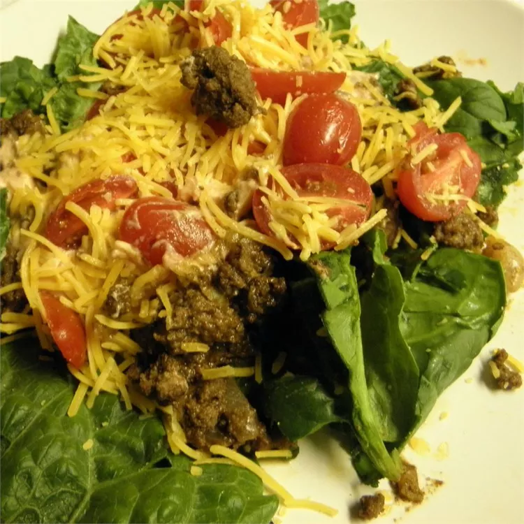

Baked eggs in avocado

Description
There's talk in the reviews about whether it's okay to eat dairy in the paleo diet. Ripstel says, "Some people opt for a little dairy on a paleo diet, especially butter. I think it is more of a grey area than a hard rule." Nichola added: "Not paleo, but can be considered 'primal' because of the dairy." So choose cheese if you like or simply skip it; either way, you'll love this quick paleo lunch.
Ingredients
- 2 tbsp chilli powder
- 2 tsp ground cumin
- 2 tsp garlic powder
- 1/2 tsp cayenne pepper
- salt and groud black pepper to taste
- 1 lb ground beef
- 1 onion, diced
- 2 cloves minced garlic
- 1/2 cup salsa
- 1/4 cup sour cream
- 1 tbsp lime juice
- 2 romaine hearts, shredded
- 3 cups cherry tomatoes, halved
- 1/4 cup shredded Cheddar chesese (optional)
- 1/3 cup chopped cilantro
Steps
- mix chilli powder, cumin, garlic powder, cayenne pepper, salt and ground black pepepr in small bowl
- heat a large skillet over medium-high heat and cook ground beef, stirring often, until the meat is crumbly, evenly browned, and no longer pink, about 10 minutes. Mix in onion and garlic; cook and stir until the onion has softened and turned translucent, about 5 minutes. Stir spice mixture into ground beef mixture and cook until fragrant, 2 to 3 more minutes.
- Combine salsa, sour cream, and lime juice in a small bowl. To serve, spread shredded romaine lettuce onto a serving platter and top with meat mixture, salsa mixture, cherry tomatoes, Cheddar cheese, and chopped cilantro.